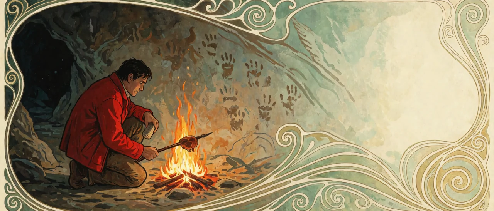
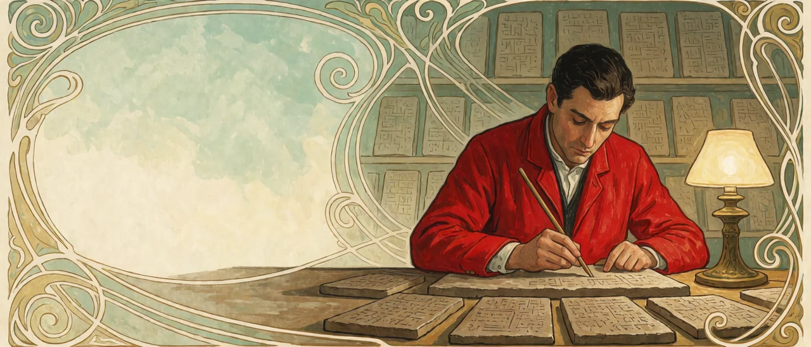

1. The evolution of lifeforms
In the previous piece, lifeforms were agents that emerged as dissipation accelerators. They split inside from outside with a membrane, catch the flow of energy with ATP to guard the order inside, and carry themselves forward with DNA. After emerging, the device kept getting pushed in the same direction. Whatever caught more energy, faster, remained.
In the Cambrian, at the opening of the Paleozoic, that push exploded. In a short span, most of today's animal phyla appear in the fossil record at once: the Cambrian explosion. Bodies grew hard shells and spines, and hunting animals appeared. A race began in which the outer membrane became both weapon and shield. Andrew Parker proposed that the appearance of eyes triggered this explosion — the Light Switch Hypothesis, set out in his book In the Blink of an Eye. Once animals could see, the contest of chasing and hiding began.
Predation is a race over how fast energy can be taken. To prey is to break through another's outer membrane and take the order and energy guarded inside. Eat the energy stored from a star's photons, then eat the body that ate it. The paths by which energy scatters stack up in layers and speed up. The backbone was one answer to this race. With an axis to support the body, bodies grew bigger and faster, nerves gathered along the spinal cord, and a brain settled at the head end.
2. Eyes, brains, and first-order representation
What eyes and brains do together is translate. They carry the light and sound coming in from outside over into a model inside the body. The animal sketches inside itself what is up ahead and where it's moving, and moves its body by looking at that sketch. This inner model is a representation.
At this stage, representation is attaching tags to objects: that one is food, that one is danger. The tags are stuck to the senses. It is a picture of what is in front of you right now, and it fades when you close your eyes. This piece calls it first-order representation. Plenty of animals use it. Having representations is not yet enough to be a living cognizer.

3. Hands, tools, and cooking
In the human line, the hands were freed. Standing on two feet released the forelimbs from walking, and those hands picked up stones. A tool is body added outside the outer membrane. Just as coral stone and tree trunks widened the boundary with non-living material in <Cognitive Axioms 03_1>, a stone edge and a stick extend the body with non-living material. A stone edge does what teeth couldn't, and a stick reaches where an arm couldn't.
Then fire came in. Cooked food yields more energy from the same meal at a lower cost of digestion. Richard Wrangham proposed that cooking cut the energy spent on digestion and made room to sustain a large brain — the Cooking Hypothesis, set out in his book Catching Fire: How Cooking Made Us Human. Fire is a device for digesting outside the body first. The way lifeforms accelerate dissipation moved from inside the body to outside it.
4. Language, symbols, and writing
With language, representation came loose from the senses. The sound "lion" calls up a lion even when there's no lion in sight. Language gave a sound to the tags once attached to objects. A tag that has become a sound comes loose from its object and turns into something you can call up on its own, compare, and look back over.
Writing carved those symbols outside the body. Once wedge-shaped marks were pressed into clay tablets in Mesopotamia, memory could leave one person's head and pass intact to the next. Representations began to pile up. As coral stone remains after the polyps die, the clay tablet remains after the writer dies, and one person builds the next representation on top of what another built. As tools extended the body outside the body, writing extended cognition outside the body, and its use grew more refined over generations. A tag carved outside the body can be observed again, like an object in front of you. Recognizing the tagging itself, on the premise that objects have been tagged — this piece calls it tag recognition. It is the level at which you know that the word "lion" is not a lion but a tag attached to one. Tag recognition is a different level from looking again at your own recognition of the lion — the recognition of recognition, which is second-order representation. Second-order representation is taken up separately in a later piece.

5. The emergence of the living cognizer
Among lifeforms, some acquired a cognitive system for handling representations. They translate the outside world into an inner model and use that translation as material for computation. This subset is the living cognizer. What draws the line is not stopping at tagging objects but recognizing the tag as a tag — operating on tag recognition.
The living cognizer's operations are cognitive operations, and the engine of those operations is abduction. In <Cognitive Axioms 02_1>, abduction was the only operation that opens a hypothesis space. To open a new hypothesis space, you first have to know that the tag now attached to an object is not the object itself. Only then can you try attaching a different tag. A new hypothesis space opens only on top of the recognition that tags can be swapped — tag recognition. Abduction is the operation that became available with the living cognizer, and it is also the operation that makes a living cognizer what it is.
The next piece takes up the two states the living cognizer comes with by default: ambiguity and anxiety.